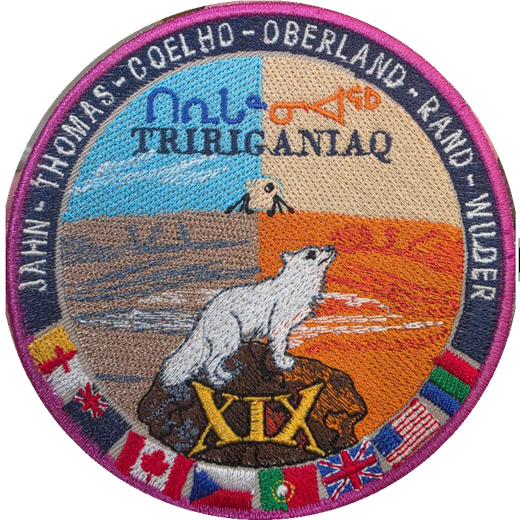

The Flashline Mars Arctic Research Station (FMARS) sits on Haynes Ridge above the northwest rim of the Haughton impact structure. Crew XIX "Tiriganiaq" (Inuktitut for arctic fox) operates simulated Mars EVAs from the habitat on foot and by ATV. This planner combines the mission GIS layers for geology study-site selection and traverse design.
The Haughton impact structure formed about 39 million years ago (late Eocene) when an impactor roughly 2 km across struck the Arctic Platform of Devon Island. The target was a nearly 1.9 km thick sequence of Ordovician and Silurian dolomites and limestones, with minor evaporites and shales, resting on Precambrian gneissic basement. The impact excavated a transient cavity to basement depth and left an apparent crater diameter of about 23 km, with a structurally uplifted center containing shocked basement clasts brought up from more than 1.5 km down.
The crater interior is filled with pale grey clast-rich impact melt rock, locally over 100 m thick, whose carbonate melt groundmass makes Haughton unusual among terrestrial craters and a key analog for impacts into volatile-rich targets on Mars. Its badlands-style hills dominate the terrain inside the rim.
Impact heating drove a crater-wide hydrothermal system as groundwater circulated through the hot melt sheet and fractured rim. Its fossil record includes vugs and veins of calcite, selenite and fibrous gypsum, marcasite and pyrite bodies, and sulfide-bearing breccias concentrated near the faulted rim, plus discrete vent structures. Eighty vent and hydrothermal localities digitized from the Osinski et al. 2005 map are included as a layer; they are prime EVA sampling targets because equivalent systems on Mars are candidate habitats for past life.
A lake later occupied the crater and deposited the Miocene Haughton Formation, laminated lacustrine sediments that preserve fossil plants, insects and vertebrates. Quaternary glaciation and continuous permafrost then sculpted the present polar desert: patterned ground, ice wedges, gullied breccia slopes, and seasonal meltwater channels. Stream crossings noted in the GPS survey can change daily during peak melt in July.
• Arctic DEM 2m mosaic v4.1 (Polar Geospatial Center): hillshade, elevation tint, 25 m contours, elevation profiles, 3D terrain
• Osinski et al. 2005 geological map of the Haughton impact structure (1:25K, georeferenced) and digitized hydrothermal vents
• Osinski & Spray 2010 simplified geological map
• FMARS 2007 science study-sites overview map (J. Clarke)
• GSC surficial geology, western Devon Island (vector polygons)
• GSC Bedrock Geology of Canada (national compilation, clipped)
• FMARS GPS survey CSV and crew EVA GPS tracks (KML)
• Basemaps: Esri World Imagery / OpenTopoMap (online)
aoi.shp and "BX W SULFIDE" shapefiles are missing their .shp geometry files in the project folder; Canada-wide geophysics grids (200 m magnetics, 2 km gravity) are too coarse to be useful at crater scale.